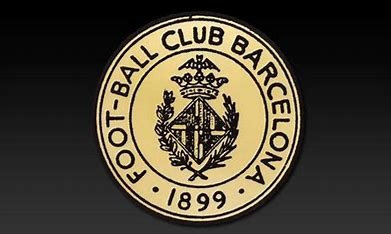

Historia del FC Barcelona
El Fútbol Club Barcelona, fundado el 29 de noviembre de 1899 por un grupo de jugadores liderados por Joan Gamper, es uno de los clubes de fútbol más exitosos y populares del mundo. Conocido como "Barça", el club representa mucho más que un equipo de fútbol, simbolizando la cultura catalana y su lema "Més que un club". A lo largo de su historia, ha logrado consolidarse como una institución deportiva y social de renombre global.
El Barcelona ha tenido una rica trayectoria deportiva, destacándose tanto en competiciones nacionales como internacionales. Entre sus éxitos más emblemáticos se encuentran los numerosos títulos de La Liga, Copas del Rey y Ligas de Campeones de la UEFA.
Palmarés
- 26 títulos de La Liga
- 31 Copas del Rey
- 5 Ligas de Campeones de la UEFA
- 3 Mundiales de Clubes de la FIFA
- 4 Recopas de Europa
- 5 Supercopas de Europa
- 14 Supercopas de España
Evolución de los Escudos del FC Barcelona
| Escudo | Período |
|---|---|
|  | 1899 - 1910 |
| 1910 - 1920 | |
| 1920 - 1936 | |
| 1936 - 1941 | |
| 1941 - 1960 | |
| 1960 - 1974 | 1974 - 2002 |
 |
2002 - Presente |